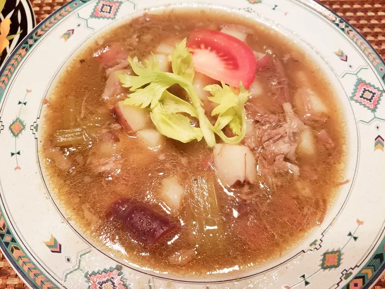

Sop Buntut

Description
This is my version of Indonesian sop buntut, a deeply comforting oxtail and vegetable soup. Rich in collagen and
filled with complex flavors, I always serve this with steamed rice and extra sliced tomatoes, fish sauce, shallot
flakes (or French-fried onions), and lime wedges on the side.
Ingredients
- 4 shallots, peeled and halved
- 1 large onion, quartered, divided
- 1 (2 inch) piece ginger, peeled and thinly sliced across the grain
- 5 cloves garlic, peeled
- 3 tablespoons canola oil
- 6 whole cloves (Optional)
- ½ teaspoon ground nutmeg
- ¼ teaspoon ground cinnamon
- 4 pounds meaty oxtail pieces, at room temperature
- 3 stalks celery, cut into 1-inch pieces
- 2 large carrots, cut into 2-inch pieces, divided
- 4 cups water, or as needed to cover
- 3 waxy potatoes, scrubbed and cut into 1 1/2-inch chunks
- 3 large carrots, cut into 2-inch pieces
- 2 teaspoons salt
- ½ teaspoon ground black pepper
- 2 tablespoons white sugar
- 2 tablespoons fish sauce
- 3 ripe roma tomatoes, sliced horizontally into 1/2-inch wedges
- 1 (2.8 ounce) can French-fried onions
Directions
- Combine shallots, 2 onion quarters, ginger, and garlic in a food processor; pulse into a paste.
- Heat oil in a large pot over medium-high heat; cook and stir cloves, nutmeg, and cinnamon until fragrant,
about 30 seconds. Add shallot paste and fry until fragrant and slightly browned, 2 to 3 minutes. Add oxtails;
cook and stir until browned, about 5 minutes.
-
Stir remaining onion quarters, celery, and 2 carrots into the pot. Pour in enough water to cover by 2 inches.
Bring
to a boil; reduce heat, cover, and simmer until oxtail is tender, about 5 hours.
- Stir potatoes, 3 carrots, salt, and black pepper into the pot. Increase heat and simmer soup until potatoes
and
carrots are tender, about 15 minutes. Add sugar and fish sauce; stir well to combine.
- Ladle soup into large serving bowls; top with tomato wedges and French-fried onions.